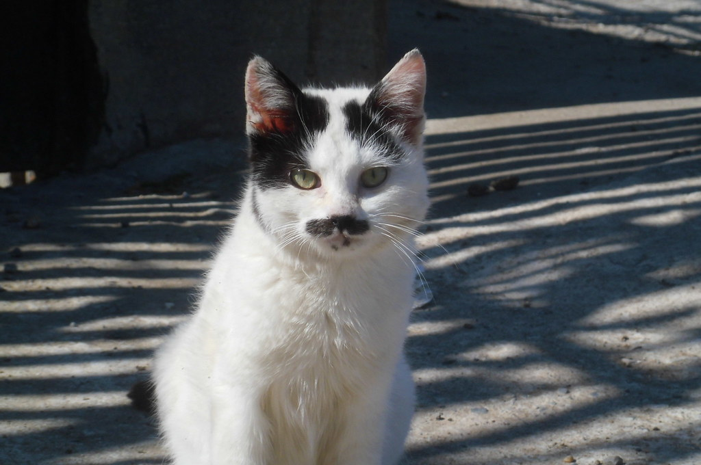

Looking for a ruler for your kingdom?
Mein Fur Purr
- Sex: Male
- Age: 4.5
- Special Requirements: NO Children, NO Pets
Mein Fur Purr is very active. He does well in homes where he can be the center of attention. He can be aggressively territorial to those outside of his household.
Book Now >>